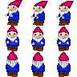

This tutorial shows some simple use cases for how to use slgfx. It assumes at least a basic working knowledge of HTML and Javascript.
Full documentation can be found here.
To start, import the bundle file:
<script type="text/javascript" src="./bundle/index.js"></script>
Note: All classes in the bundled js files are exported to the slgfx namespace for use in the browser. You will notice all calls to classes below are prefixed with "slgfx.".
Then create a div to hold the Screen:
<div id="gfxPanelDiv"></div>
Before we do anything else, it is a good idea to load up the image(s) that we will be working with later in the tutorial. We can use the ImageLoader class to tell us when the image has loaded, then we can safely call any other code we want.
We will use the following sprite sheet as the source for our ImageElement and ImageSprites:

"Gnome" image sheet is by inosine, provided under the CC BY 3.0 license.
To setup the ImageLoader, do the following:
Now we can begin seeting up our panel and elements.
To setup a basic panel:
var gfxPanel = new slgfx.GfxPanel({ targetElement:document.getElementById("{gfxPanelId}"), width:128, height:96 }); var gfxLayer = gfxPanel.createLayer("GfxLayer"); gfxPanel.render();
Create an ImageRenderer, an ImageElement, and add it to the canvas context:
var gfxPanel = new slgfx.GfxPanel({ targetElement:document.getElementById("{gfxPanelId}"), width:128, height:96 }); var gfxLayer = gfxPanel.createLayer("GfxLayer"); gfxPanel.render(); var imageRenderer = new slgfx.ImageRenderer(); var element = new slgfx.ImageElement({ gfxPanel: gfxPanel, image: loadedImages.gnome, sourceX:0, sourceY:0, sourceWidth:32, sourceHeight:32, width:32, height:32, scaleX:2, scaleY:2, imageRenderer:imageRenderer }); gfxLayer.addElement(element);
Let's move the element, reset its position, and repeat:
var gfxPanel = new slgfx.GfxPanel({ targetElement:document.getElementById("{gfxPanelId}"), width:128, height:96 }); var gfxLayer = gfxPanel.createLayer("GfxLayer"); gfxPanel.render(); var imageRenderer = new slgfx.ImageRenderer(); var element = new slgfx.ImageElement({ gfxPanel: gfxPanel, image: loadedImages.gnome, sourceX:0, sourceY:0, sourceWidth:32, sourceHeight:32, width:32, height:32, scaleX:2, scaleY:2, imageRenderer:imageRenderer }); gfxLayer.addElement(element); function resetMovement(element) { element.setX(0); element.setY(0); element.moveTo(32, 32, 5000, () => resetMovement(element)); } resetMovement(element);
Instead of a static image, let's create a sprite instead:
var gfxPanel = new slgfx.GfxPanel({ targetElement:document.getElementById("{gfxPanelId}"), width:128, height:96 }); var gfxLayer = gfxPanel.createLayer("GfxLayer"); gfxPanel.render(); var imageRenderer = new slgfx.ImageRenderer(); var element = new slgfx.ImageSprite({ gfxPanel: gfxPanel, image:loadedImages.gnome, width:32, height:32, scaleX:2, scaleY:2, imageRenderer:imageRenderer, frames: [ new slgfx.ImageSpriteFrame({duration:350, sourceX:0, sourceY:0, sourceWidth:32, sourceHeight:32}), new slgfx.ImageSpriteFrame({duration:350, sourceX:64, sourceY:0, sourceWidth:32, sourceHeight:32}) ] }) gfxLayer.addElement(element);
We can flip the element:
var gfxPanel = new slgfx.GfxPanel({ targetElement:document.getElementById("{gfxPanelId}"), width:128, height:96 }); var gfxLayer = gfxPanel.createLayer("GfxLayer"); gfxPanel.render(); var imageRenderer = new slgfx.ImageRenderer(); var element = new slgfx.ImageSprite({ gfxPanel: gfxPanel, image:loadedImages.gnome, width:32, height:32, scaleX:2, scaleY:2, imageRenderer:imageRenderer, frames: [ new slgfx.ImageSpriteFrame({duration:350, sourceX:0, sourceY:0, sourceWidth:32, sourceHeight:32}), new slgfx.ImageSpriteFrame({duration:350, sourceX:64, sourceY:0, sourceWidth:32, sourceHeight:32}) ] }) gfxLayer.addElement(element); element.setHorizontallyFlipped(true);
We can leverage events on the panel to make it rotate over time:
var gfxPanel = new slgfx.GfxPanel({ targetElement:document.getElementById("{gfxPanelId}"), width:128, height:96 }); var gfxLayer = gfxPanel.createLayer("GfxLayer"); gfxPanel.render(); var imageRenderer = new slgfx.ImageRenderer(); var element = new slgfx.ImageSprite({ gfxPanel: gfxPanel, image:loadedImages.gnome, width:32, height:32, scaleX:2, scaleY:2, imageRenderer:imageRenderer, frames: [ new slgfx.ImageSpriteFrame({duration:350, sourceX:0, sourceY:0, sourceWidth:32, sourceHeight:32}), new slgfx.ImageSpriteFrame({duration:350, sourceX:64, sourceY:0, sourceWidth:32, sourceHeight:32}) ] }) gfxLayer.addElement(element); gfxPanel.on(slgfx.EventType.BEFORE_RENDER, function(element, e) { var degrees = (e.time / 10) % 360; element.setRotation( slgfx.Utils.degreesToRadians(degrees) ); }.bind(null, element));
Let's make the element shake when clicked:
var gfxPanel = new slgfx.GfxPanel({ targetElement:document.getElementById("{gfxPanelId}"), width:128, height:96 }); var gfxLayer = gfxPanel.createLayer("GfxLayer"); gfxPanel.render(); var imageRenderer = new slgfx.ImageRenderer(); var element = new slgfx.ImageSprite({ gfxPanel: gfxPanel, image:loadedImages.gnome, width:32, height:32, scaleX:2, scaleY:2, imageRenderer:imageRenderer, frames: [ new slgfx.ImageSpriteFrame({duration:350, sourceX:0, sourceY:0, sourceWidth:32, sourceHeight:32}), new slgfx.ImageSpriteFrame({duration:350, sourceX:64, sourceY:0, sourceWidth:32, sourceHeight:32}) ] }) gfxLayer.addElement(element); var currentlyShaking = false; element.on(slgfx.EventType.MOUSE_UP_ON_ELEMENT, function(e) { if (currentlyShaking) return; currentlyShaking = true; this.shake(20, 2, 50, 0, 3000, function() {currentlyShaking = false;}); }.bind(element));